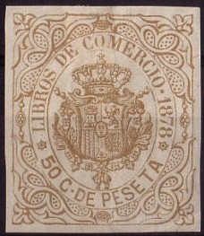
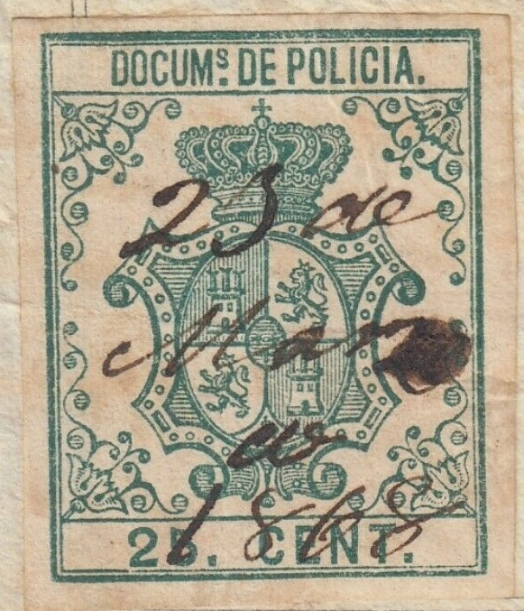
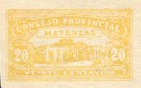
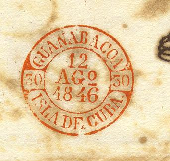

{kind=link}

Return To Catalogue - Spanish Westindies - Cuba Spanish colony - Cuba 1899 onwards
Note: on my website many of the
pictures can not be seen! They are of course present in the
catalogue;
contact me if you want to purchase it.
Many values exist.
In 1895 the above stamp was prepared in the
values 2 c brown, 5 c blue, 10 c red and 25 c green by the cuban
revolutionary movement. The desing is the arms of Cuba, the text
reads 'REP. DE CUBA CORREOS'. They were never set into use due to
the American invasion (source: 'Les Timbres de Fantaisie' of
Georges Chapier). The above cancel can therefore only have been
made for philatelic purposes. I've also seen a 'misprint': 10 c
green.
Other sources indicate that these stamps were issued in 1871. I
do not know which date is correct.
In 1868 the first telegraph stamps for Cuba were issued with Queen Isabella, inscription 'CUBA TELEGS 1868'; values: 200 m blue on lilac, 500 m brown on yellow and 1 E orange on blue (sorry, no picture available yet). A similar set was issued in 1869 with inscription 'CUBA TELEGS 1869', values: 200 m blue, 500 m brown and 1 E orange. The last ones exist surcharged with 'HABILITADO POR LA NACION' in black or blue.

Designs with the arms of Spain in an ellipse were issued from 1870 onwards (year of issue is indicated on the stamps,).
Alfonso XII, Inscription 'Cuba-Tels 1876', 3 stamps were issued in this design in 1876; 1 P green, 2 P blue and 4 P red.

In 1875 stamps with arms were issued in a new design (no year indicated). Similar designs were issued in 1877, 1878, 1879, 1880 and 1881, exmple with 'CUBA TELS 1879':

The same design without year-indication was issued in 1882, inscription 'CUBA TELEGRAFOS' only. This type was re-issued in many colours upto 1896. Security overprints also exist (1883, due to a theft of stamps) similar to the postage stamps on some of these stamps.
New designs with famous persons were issued in 1910 and 1911, example:
Finally in 1916 a last series was issued with a man holding a thunderbolt. In 1924 the use of telegraph stamps was stopped.
Man holding thunderbolt
Examples:
RECIBOS Y CUENTAS (no country name indicated for the first issues)

The following values exist in the above design: 1.25 P lilac (1871), 1.25 P brown (1872), 1.25 P brown (1873), 1.25 P lilac (1874), 1.25 P lilac (1875), 1.25 P violet (1876), 1.25 P blue (1877), 1.25 P blue (1878), 1.25 P green (1879), 1.25 P red (1880) and 25 c blue (1881). The year is incorporated in the design in these stamps. Some new values with 'CUBA' were issued in 1883 (25 c brown) and 1884 (25 c red). A stamp with inscription 'RECIBOS CUBA' was issued in 1886 (25 c green).
LIBROS DE COMERCIO (no country name):

This design was first issued in 1871, every year up to 1881 a new serie was issued (the year is always indicated on the stamp).


(Reduced size)
(inscription 'TIMBRE NACIONAL', reduced sizes)
In the above design I have seen: 1 c green, 2 c red, 5 c blue, 8 c brown, 10 c orange, 50 c black, 50 c brown and 1 $ (larger size).
('GIRO')
In the above 'GIRO' design exist: 10 c, 25 c, 50 c, 1 E, 1.50 E, 2 E, 2.50 E, 3 E, 3.50 E, 4 E, 4.50 E, 5 E, 6 E, 7 E, 8 E, 9 E and 10 E (all in the colour brown). They were issued in 1868. Other similar designs were issued up to 1896, example:

1865 issue "DOCUMs. DE POLICIA".

Two Policia stamps, one from 1878 and another without date
Stamps with inscription 'CUBA POLICIA' were first issued in 1877. Almost every year a new serie was issued up to 1888. The year is always indicated in the design of the stamp (except for the stamps issued after 1882).

I have seen the values: perforated: 1 c green, 5 c blue, 10 c brown and 25 c black. Imperforate: 1 c green, 2 c red, 5 c blue, 10 c brown, 15 c violet (?), 20 c yellow, 25 c black and 50 c black.
Pre-philatelic 'Baeza' cancel, similar to the cancels used in Spain:

{kind=link}
{kind=link}